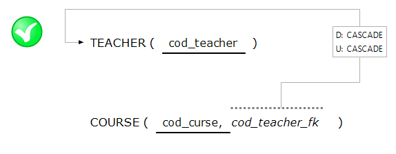
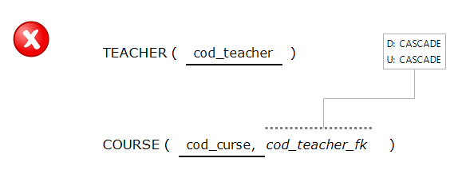

uncompleteLink
The uncompleteLink constraint refers to the state of the links that are created to establish a FK, all links must be complete, having Thus, a "source" as a "target".
Correct use

Incorrect use
